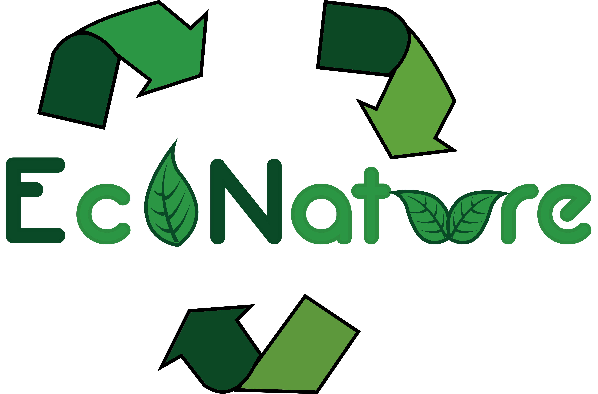

Probablemente has escuchado hablar de “las tres erres”: reducir, reutilizar y reciclar. Las tres erres (3R’s) es una regla para cuidar el medio ambiente, específicamente para reducir el volumen de residuos o basura generada. En pocas palabras, las 3R’s te ayudan a desechar menos basura, así reduciendo tu huella de carbono.
Este concepto consiste en tratar de simplificar el consumo de los productos directos, osea, todo aquello que se compra y se consume, ya que esto tiene una relación directa con los desperdicios. Por ejemplo, en vez de comprar 6 botellas pequeñas de una bebida, se puede conseguir una o dos grandes, teniendo el mismo producto pero menos envases sobre los que preocuparse.
Consiste en el proceso de someter los materiales a un proceso en el cual se puedan volver a utilizar, reduciendo de forma verdaderamente significativa la utilización de nuevos materiales, y con ello, más basura en un futuro.
Nos estamos refiriendo a poder volver a utilizar las cosas y darles la mayor utilidad posible antes de que llegue la hora de deshacernos de ellas, dado que al disminuir el volumen de la basura. Esta tarea suele ser la que menos atención recibe y es una de las más importantes, que también ayuda mucho la economía en casa.
Esta basura doméstica va a parar a vertederos, barrancas, a la calle y a veces a incineradoras. Buena parte de esa basura, el 60% del volumen, lo constituyen envases y embalajes, en su mayoría de un solo uso, normalmente fabricados a partir de materias primas no renovables, o que aun siendo renovables se están explotando a un ritmo superior al de su regeneración y difícilmente reciclables una vez se han utilizado. A lo anterior tenemos que añadir que en el hogar también se producen residuos derivados de pinturas, disolventes, insecticidas, productos de limpieza. Toda esta basura puede ser llevada a los centros de acopio. Quemarla tampoco es la solución, pues se emiten contaminantes atmosféricos y se producen cenizas y escorias muy tóxicas. Se trata, en definitiva, de que pongamos en práctica la consigna de las tres erres, Reducir, Reutilizar y Reciclar, en este orden de importancia.
Se trata de disminuir la cantidad de recursos que utilizamos por medio de otros hábitos y/o técnicas; por ejemplo no pedir bolsas en los supermercados a menos que sea necesario, reducir el consumo de papel etc.
La mayoría de los materiales que usamos día a día pueden ser reutilizados de alguna manera: imprimir el papel por los dos lados, reutilizar la madera de tarimas, donar libros, aparatos eléctricos etc.
Debe de ser la última opción si es que las otras dos R´s no funcionaron o en su defecto, el reciclaje es inevitable. El reciclaje es una manera de aprovechar los materiales, sin embargo hay que recordar que al reciclar se gasta energía y se contamina al reprocesar. La mayoría de todos los materiales que usamos pueden ser reciclados y usados en otras aplicaciones; materiales como el vidrio, pueden reciclarse 40 veces por ejemplo. Es nuestro compromiso reciclar lo mayor posible y disminuir la producción de basura.